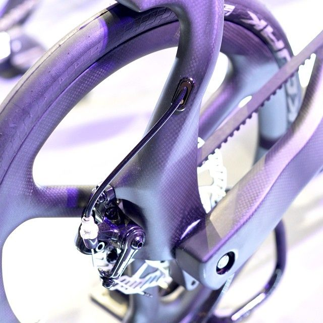
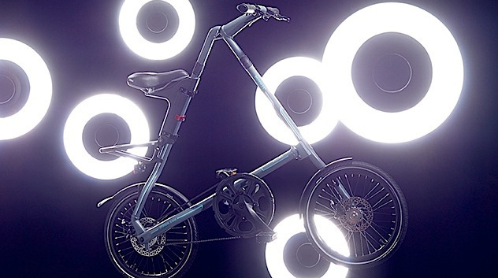

is to provide as many people as possible with a viable choice of transportation. Make the Earth great again!
Born in 1984, the Strida bike is still capable of confusing by its appearance: instead of the usual chain, it has a Kevlar belt, and the frame is triangle shaped and it does not look very reliable, although in practice it can withstand loads up to 110 kg. The bike folds and unfolds in seconds, assembled so compact that it can be stored at work under the table or put in a wardrobe, and despite the tiny wheels behaves quite quickly on the road.

Why Strida?
- Roll, not carry: folded Strida can be rolled behind or in front of you - no need to drag it!
- Very low weight: from 9 kg, these bikes are really light!
- The belt, not the chain: the belt that is similar to the drive belt in the car, it does not get dirty and does not make any noise!
- Height adjustment: one size does not mean one height!
- Travel: it is convenient to take a Strida in a plane, that is why people often travel with them sometimes it is possible to carry as hand luggage!

The most effective way to prevent harm to the environment is to use a bicycle. Every kilometer traversed by bike, instead of a car, helps to prevent 145 grams of carbon dioxide from being emitted into the atmosphere.
Vehicles also cause excessive noise, which is also one of the environmental problems. The normal sound level is 30 dB, however, in the city, the sound level sometimes reaches 95 dB.
The proliferation of the use of bicycles contributes to the improvement of the state of the environment, it is beneficial to people's health, and also brings social and other benefits, making our lives more convenient and comfortable.